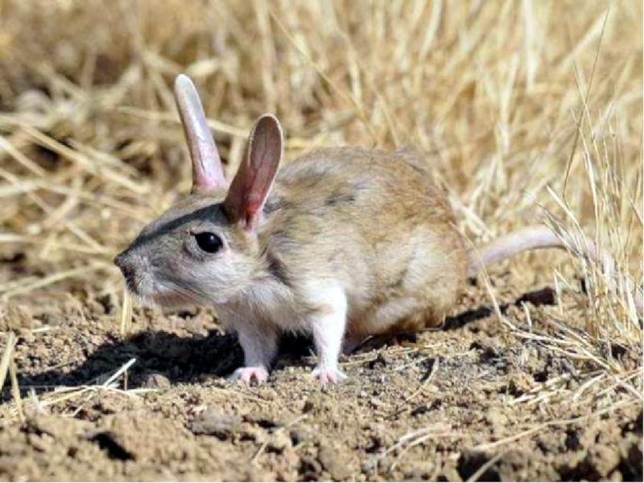
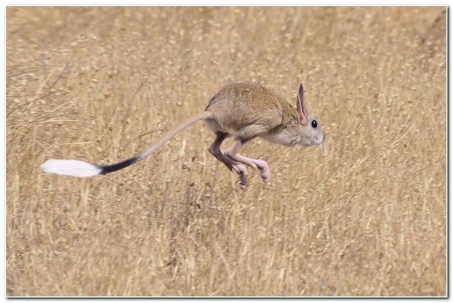
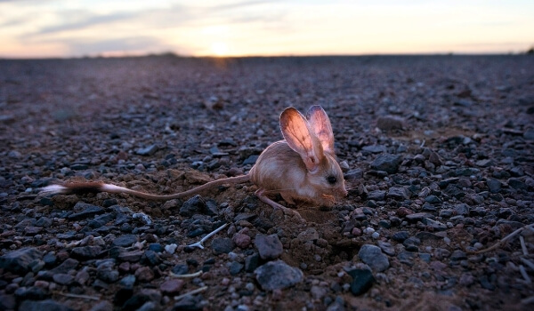

Большой тушканчик (по-другому, земляной заяц), считается среди тушканчиков самым крупным животным.
При небольшом размере тела, всего 25 см, он может совершать невероятно большие прыжки, длиной до трех метров. Это получается благодаря мощным и длинным задним лапам. Также благодаря этим удивительным лапам он может разгоняться до 45-50 километров в час, а это средняя скорость передвижения автомобиля по городу!
Если возникает опасность, он уходит от преследователей плавными прыжками, отталкиваясь поочередно – то одной, то другой ногой. Со стороны кажется, что он буквально летит над землей. А длинный тонкий хвост выполняет важную функцию – балансировки во время бега. На конце хвоста имеется пушистая меховая кисточка, чаще всего белого цвета. Хвост также является накопителем жировых отложений. Они помогают животным переживать зимний период.
Примечательно, что эти маленькие зверьки не пьют воды. Они потребляют необходимое количество жидкости из растительности.
Большой тушканчик любит просторное жилье и строит много нор для себя. Коридор, который ведет к гнездовой камере, может достигать до 6 метров . А в северных регионах они часто занимают свободные домики сусликов.
